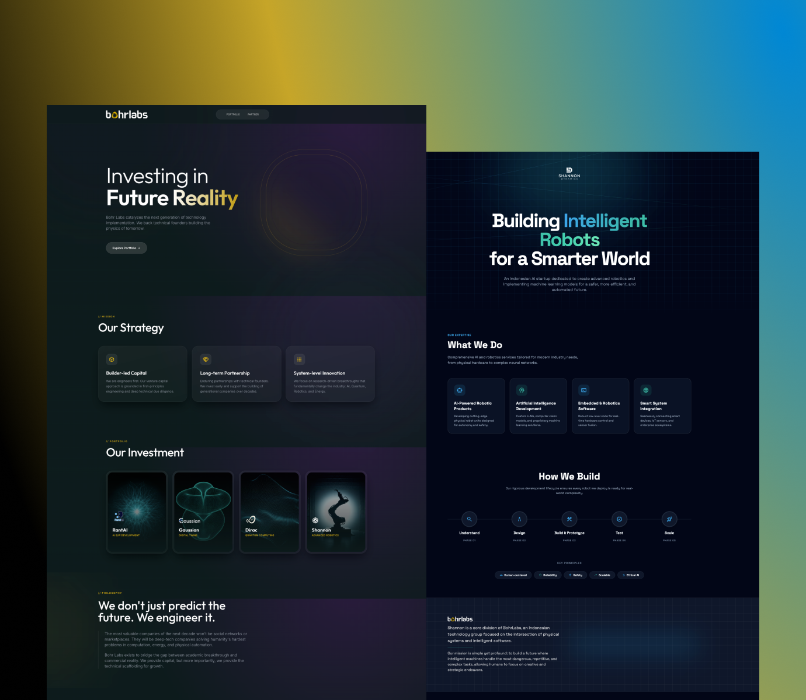
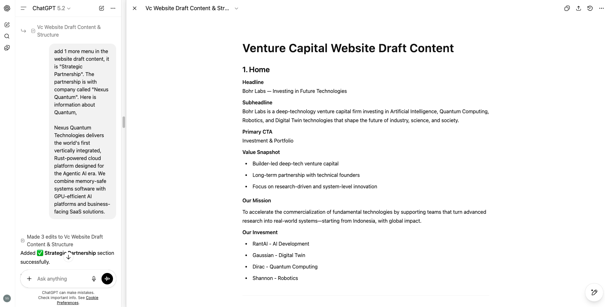
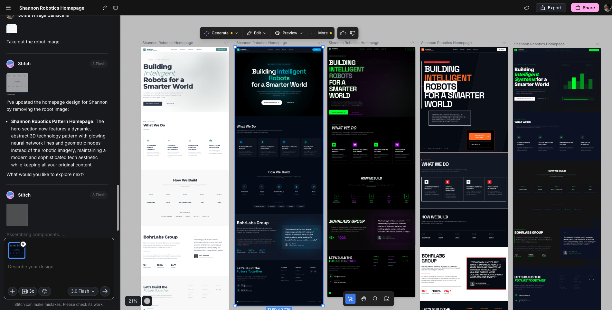
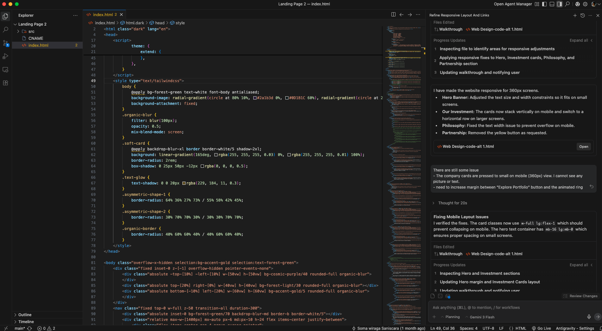
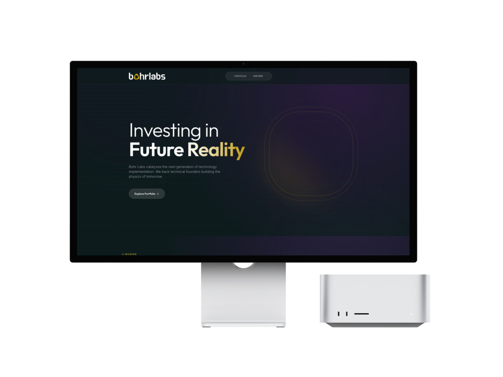
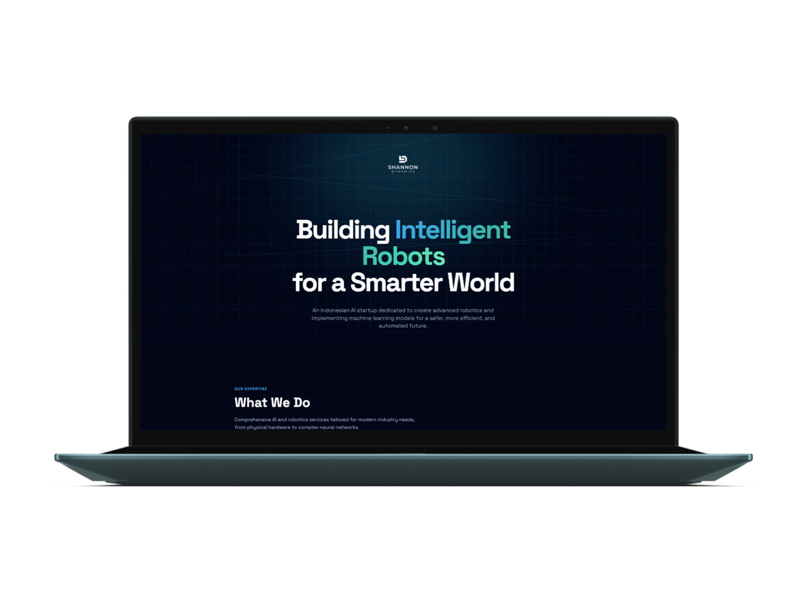

This process demonstrates a fast landing page delivery for businesses: content creation, AI-assisted UI exploration, development iteration, domain setup, and live deployment. Image shown are 2 websites that was delivered in 1 day each. Lets see the process below;

Before designing anything, I focused on clarifying the core message, Structuring the content hierarchy. Content-first ensures alignment between business goal and Visual direction

Initially I tried to use Google Stitch to explore website design ideas. AI model in Stitch able to deliver various design alternatives quickly. One of the amazing thing is, Stitch can deliver the design in HTML format directly, which makes it easy to be use as development starting point

I moved into Google Antigravity to continue development. At this time of writing, Antigravity AI tool is one of the Free AI tool that we can use. In this stage, Ai tool is very helpful to add Hyperlinks, improve the responsiveness and refine detail informations on the website.

To make it proffesional, we purchased a custom domain from famous domain provider and setup free email account for business communication.
Once development and domain is done, web publication is via Github Pages. DNS configuration is required on Github pages to use the custom domain.


The website is now live as “bohrlabs.id” and “shannon.id”